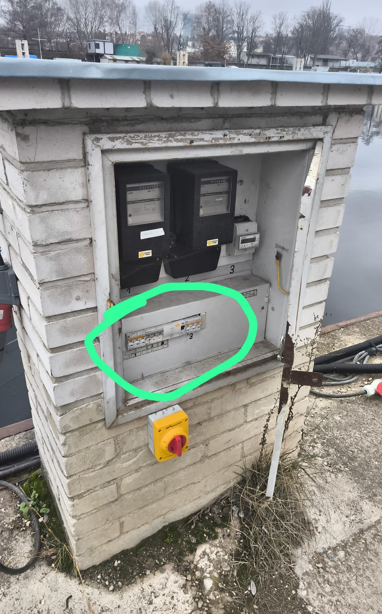

Listrik padam – pertolongan pertama
Jika Anda dapat bertindak pada papan listrik, periksa panel seperti di gambar ini. IMPORTAN: SELALU Pakai SEPATUKAH Sepatu PUTIK saat menyentuh panel listrik atau peralatan apa pun!
Lihat di bawah ini dan hubungi kami jika perlu!

Titik-titik merah menunjukkan lokasi sakelar yang harus diperiksa apakah dalam posisi ke atas.
Pertama, periksa panel listrik di dalam houseboat Anda: semua sakelar harus dalam posisi ke atas.

Semua saklar harus menyala. (kecuali ada tanda, pita, atau sesuatu yang tidak biasa).

Panel listrik ada di dermaga, mirip dengan ini. Beberapa di belakang ke belakang.

Periksa posisi ini, dekat gerbang biru.

Ini juga bisa tersandung.

Di awal tempat parkir, periksa apakah nomor 9 memiliki semua pemutus (


No. 9 di dalam (Anda perlu kunci atau sesuatu yang memutar tiang persegi)
Tips: gunting dapat membantu memutar lubang persegi pada gagang untuk membuka nomor 9.
PENTING: selalu tutup kembali pintu panel setelahnya, terutama saat cuaca hujan.

Lebih jauh, nomor 8 memiliki beberapa saklar yang juga harus di atas.
Tips: gunting dapat membantu memutar lubang persegi pada gagang untuk membuka nomor 8.
PENTING: selalu tutup kembali pintu panel setelahnya, terutama saat cuaca hujan.

Periksa ini di dalam. Selalu periksa tidak ada yang bekerja di bawah aliran!
PENTING: MOHON LAPORKAN SAKLAR MANA YANG TIDAK BERFUNGSI. AMBIL FOTO SEBELUM DAN SESUDAHNYA.
Pemadaman listrik di perahu rumah lebih umum daripada di apartemen karena alasan kapasitas dan lebih banyak persyaratan karena cuaca terutama pada hari-hari yang sangat hangat atau sangat dingin.
Halaman ini diterjemahkan secara otomatis dari panduan berbahasa Inggris. Jika ada keraguan, versi bahasa Inggris yang berlaku. Versi asli bahasa Inggris